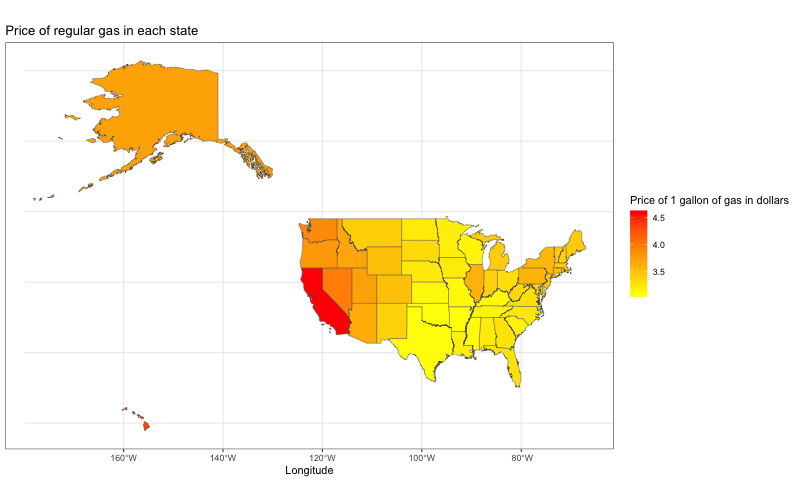
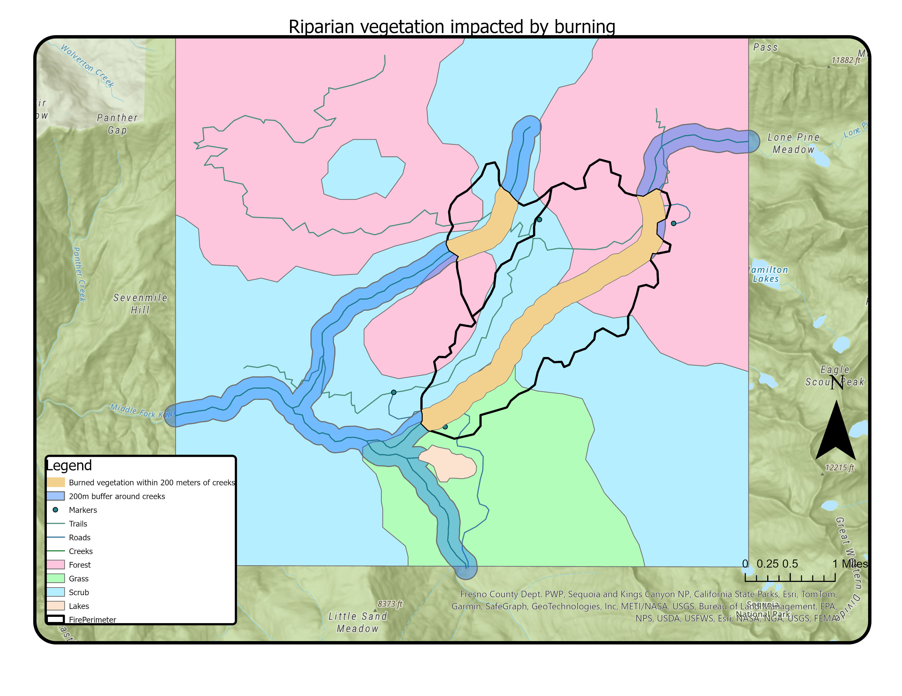
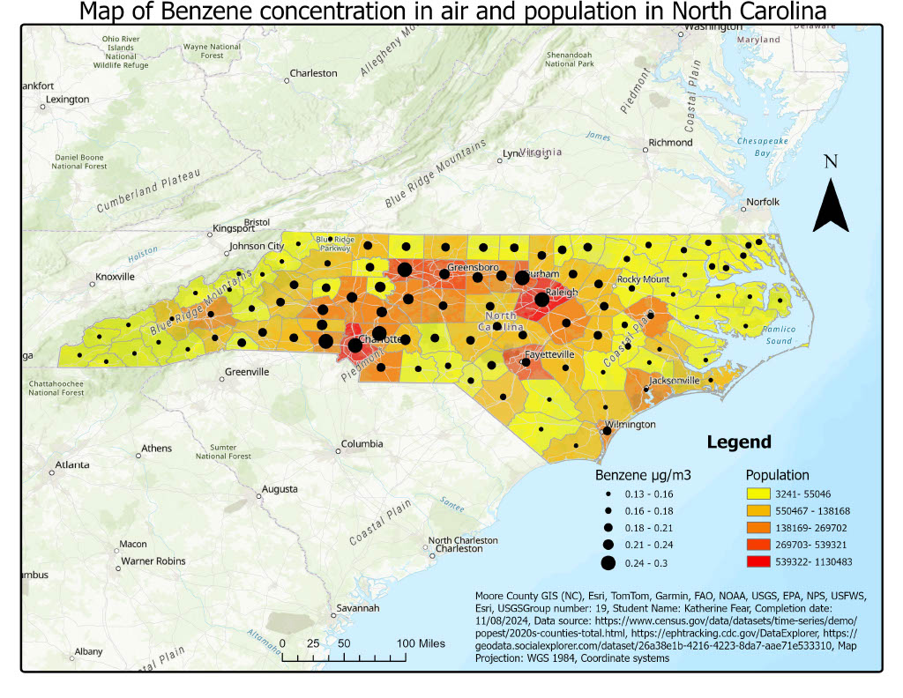
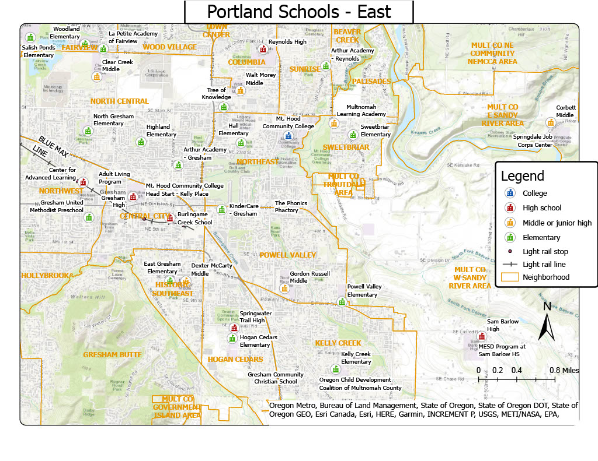

Date: April 29th 2025


Description:
In this project, I focused on using Python and R to conduct an analysis of the socioeconomic status of those most at risk from polluted flood waters. I used the library arcpy to execute this project, as well as R to clean my data. I took current flood prediction maps and added a buffer around them to account for increased flood severity resulting from climate change. I then added a point file with the locations of the concentrated animal feeding operations (CAFOs) in North Carolina, and used the clip tool to select the CAFOs that were within the flood zones. Then, I joined socioeconomic data with a zipcode shape file and used the overlay tool to analyse the socioeconomic groups most at risk of pollution from CAFO flooding.
Date: April 22nd 2025
Description:
In this project, I used R to create a map of the variation in average income in Augusta, using ring buffers.
Date: April 20th 2025
Description:
In this project, I used R to create a map of the variation in gas prices by state, the code for this map is found on my github and linked on the code page of this website.
Date: November 13th 2024
Description:
In this project, I used the buffer and intersect tools to highlight the vegetation within 200m of a creek that was impacted by burning
Date: November 6th 2024
Description
In this project, I created a map representing the Benzene levels in the air compared to the population of each county in North Carolina
Date: October 2nd 2024
In this project,t I practiced using symbols and legends to represent schools within a region of Portland, Oregon